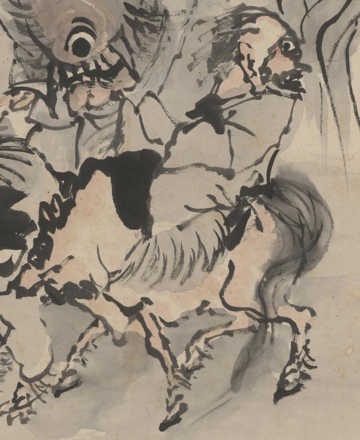

獣にまたがった化物。ざんばら髪で目玉が大きく、口が横に大きく裂けている化物が、牛とも馬ともつかない獣に跨っている。
著作者：高井鴻山／出典：親書誌：U426_nichibunken_0099：群妖図；グンヨウズ／日付：2006／資源識別子：U426_nichibunken_0099_0005_0000
Copyright (c)2010- International Research Center for Japanese Studies, Kyoto, Japan. All rights reserved.